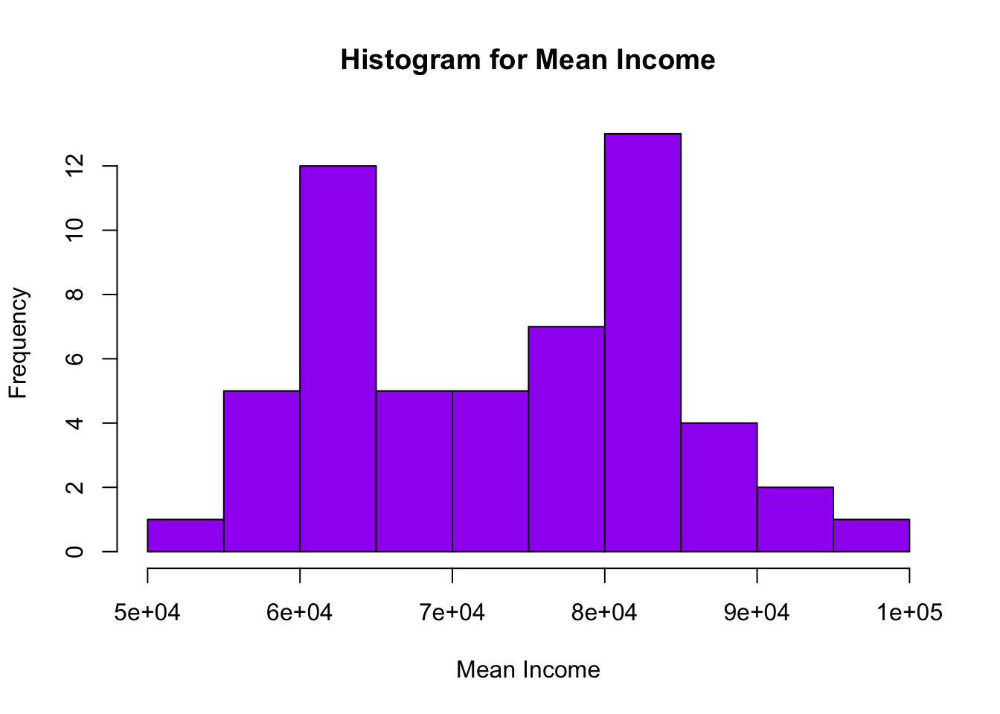

library(tidyverse)
library(ggplot2)
library(purrr)
library(readxl)
library(here)
library(dplyr)
knitr::opts_chunk$set(echo = TRUE, warning=FALSE, message=FALSE)Challenge 10
challenge_10
purrr
Challenge Overview
The purrr package is a powerful tool for functional programming. It allows the user to apply a single function across multiple objects. It can replace for loops with a more readable (and often faster) simple function call.
For example, we can draw n random samples from 10 different distributions using a vector of 10 means.
n <- 100 # sample size
m <- seq(1,10) # means
samps <- map(m,rnorm,n=n) We can then use map_dbl to verify that this worked correctly by computing the mean for each sample.
samps %>%
map_dbl(mean) [1] 0.9045876 1.9962423 3.1462860 3.9088024 4.8374965 6.1822986 7.1109099
[8] 8.1196701 9.0006509 9.9455553purrr is tricky to learn (but beyond useful once you get a handle on it). Therefore, it’s imperative that you complete the purr and map readings before attempting this challenge.
The challenge
Use purrr with a function to perform some data science task. What this task is is up to you. It could involve computing summary statistics, reading in multiple datasets, running a random process multiple times, or anything else you might need to do in your work as a data analyst. You might consider using purrr with a function you wrote for challenge 9.
This dataset describes the income statistics of various races over the years. The data shows what percentage of people fall under each income category i.e ranging from under $15,000 to $200,000 per year. The mean and median of the income is also calculated in the columns 13 and 15. The statistics are calculated all races combine and also separate for different races.
For this analysis considering only “All Race” data. Calling various function to get the analysis
#function for reading data
read_data <- function(file_name, file_type, n_max = 1000, skip = 0) {
if (file_type == "excel"){
read_excel(here("posts","_data",file_name), skip = skip, n_max = n_max)
}
else if (file_type == "csv"){
read_csv(here("posts","_data",file_name))
}
}
#function for getting the stats of a particular column using map_dbl
get_stats <- function(db){
print("Max of each double column")
print(paste(map_dbl(db[,c(4:15)], max)))
print("Min of each double column")
print(paste(map_dbl(db[,c(4:15)], min)))
print("Mean of each double column")
print(paste(map_dbl(db[,c(4:15)], mean)))
print("Median of each double column")
print(paste(map_dbl(db[,c(4:15)], median)))
print("Sum of each double column")
print(paste(map_dbl(db[,c(4:15)], sum)))
}
#function for plotting histogram
get_hist <- function(cols,colname) {
title <- str_c("Histogram for ",colname)
hist(cols, col = "purple", main = title, xlab = colname)
}#calling the function read_data
db <- read_data("USA Households by Total Money Income, Race, and Hispanic Origin of Householder 1967 to 2019.xlsx","excel", 55, 5)
db #to print the data# A tibble: 55 × 16
ALL RACE…¹ ...2 ...3 ...4 ...5 ...6 ...7 ...8 ...9 ...10 ...11 ...12
<chr> <dbl> <dbl> <dbl> <dbl> <dbl> <dbl> <dbl> <dbl> <dbl> <dbl> <dbl>
1 2019 128451 100 9.1 8 8.3 11.7 16.5 12.3 15.5 8.3 10.3
2 2018 128579 100 10.1 8.8 8.7 12 17 12.5 15 7.2 8.8
3 2017 2 127669 100 10 9.1 9.2 12 16.4 12.4 14.7 7.3 8.9
4 2017 127586 100 10.1 9.1 9.2 11.9 16.3 12.6 14.8 7.5 8.5
5 2016 126224 100 10.4 9 9.2 12.3 16.7 12.2 15 7.2 8
6 2015 125819 100 10.6 10 9.6 12.1 16.1 12.4 14.9 7.1 7.2
7 2014 124587 100 11.4 10.5 9.6 12.6 16.4 12.1 14 6.6 6.8
8 2013 3 123931 100 11.4 10.3 9.5 12.5 16.8 12 13.9 6.7 6.9
9 2013 4 122952 100 11.3 10.4 9.7 13.1 17 12.5 13.6 6.3 6
10 2012 122459 100 11.4 10.6 10.1 12.5 17.4 12 13.9 6.3 5.9
# … with 45 more rows, 4 more variables: ...13 <dbl>, ...14 <dbl>, ...15 <dbl>,
# ...16 <dbl>, and abbreviated variable name ¹`ALL RACES`#calling the function get_stats
get_stats(db)[1] "Max of each double column"
[1] "14.8" "11.4" "11" "16.8" "24.8" "15.1" "15.6" "8.3" "10.3"
[10] "68703" "1183" "98088"
[1] "Min of each double column"
[1] "9" "8" "8.3" "11.7" "16.1" "11.9" "7.7" "1.7" "1.1"
[10] "47938" "268" "53616"
[1] "Mean of each double column"
[1] "11.2727272727273" "10.1545454545455" "9.78363636363636" "13.6490909090909"
[5] "19.1418181818182" "13.2981818181818" "13.32" "4.96909090909091"
[9] "4.40909090909091" "56878.8181818182" "453.4" "73749.0727272727"
[1] "Median of each double column"
[1] "11.4" "10.2" "9.7" "13.4" "18.4" "13.3" "13.9" "5.1" "4.2"
[10] "56945" "431" "73816"
[1] "Sum of each double column"
[1] "620" "558.5" "538.1" "750.7" "1052.8" "731.4" "732.6"
[8] "273.3" "242.5" "3128335" "24937" "4056199"#calling the function get_hist
get_hist(db$...15,"Mean Income")